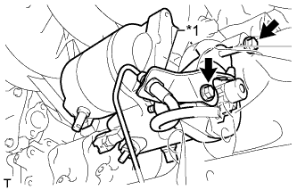

СТАРТЕР (для моделей мощностью 1,4 кВт) > УСТАНОВКА |
| 1. УСТАНОВИТЕ СТАРТЕР В СБОРЕ |
Для моделей с автоматической трансмиссией:
Установите стартер и закрепите его 2 болтами.
Для моделей с механической трансмиссией:
Временно закрепите стартер болтом.
|  |
Установите кронштейн гибкого шланга сцепления и временно закрепите его болтом.
| *1 | Кронштейн гибкого шланга сцепления |
Затяните 2 болта.
Подсоедините провод стартера к клемме 30 и закрепите его гайкой.
Установите заглушку контакта.
Подсоедините разъем стартера.
| 2. ПОДСОЕДИНИТЕ РАБОЧИЙ ЦИЛИНДР СЦЕПЛЕНИЯ В СБОРЕ (для моделей с механической трансмиссией) |
Подсоедините рабочий цилиндр сцепления с помощью 2 болтов.
| 3. УСТАНОВИТЕ ПАТРУБОК ЗАЛИВНОЙ ГОРЛОВИНЫ ТРАНСМИССИОННОГО МАСЛА В СБОРЕ (для моделей с автоматической трансмиссией) |
 |
Покройте новое кольцевое уплотнение слоем трансмиссионной жидкости и установите его на патрубок маслоналивной горловины.
Закрепите патрубок маслоналивной горловины на трансмиссии с помощью 2 болтов.
Установите щуп проверки уровня масла.
| 4. УСТАНОВИТЕ ЗАДНЮЮ ЗАЩИТУ КАРТЕРА ДВИГАТЕЛЯ В СБОРЕ |
Установите заднюю защиту картера двигателя и закрепите ее 4 болтами.
| 5. ПОДСОЕДИНИТЕ ПРОВОД К ОТРИЦАТЕЛЬНОМУ (-) ВЫВОДУ АККУМУЛЯТОРНОЙ БАТАРЕИ |